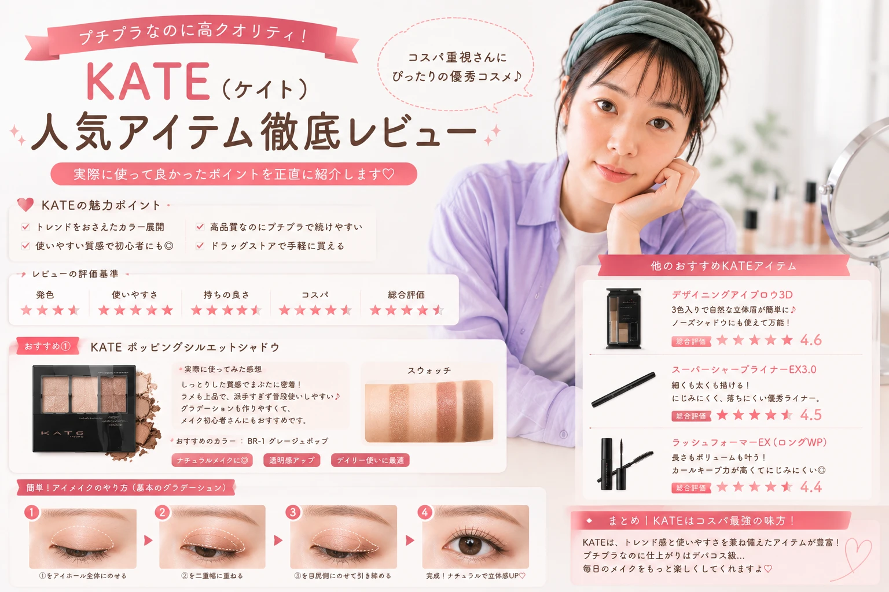

KATEのコスメが気になっているけれど、
「どの商品から試せばいい？」
「アイシャドウや眉メイクはどう選べばいい？」
と迷っていませんか？
KATEには、ベースメイクから
アイメイク、アイブロウ、リップまで、
メイクのさまざまな部分に使えるアイテムがあります。
この記事では、
KATEのコスメを選ぶときに確認したいポイントを、
メイク初心者にもわかりやすく紹介します。
KATEってどんなブランド？
KATE（ケイト）は、
メイクアップアイテムを中心に展開している
コスメブランドです。
特にアイメイクや眉メイクなど、
顔の印象を左右するポイントメイクを
しっかり楽しみたい人にもチェックしやすいブランドです。
コスメを選ぶときは、
ブランドのイメージだけで決めるのではなく、
自分が作りたいメイクや仕上がりを考えて
アイテムを選ぶことが大切です。

KATEのコスメは作りたいメイクから選ぶ
「どんなメイクをしたいか」から考える
コスメを選ぶときは、 人気やランキングだけを見るのではなく、 自分が普段どんなメイクをしたいのかを 最初に考えてみましょう。
KATEコスメの魅力をチェック
KATEのコスメを選ぶときは、
自分のメイクの中で
どこをポイントにしたいのかを
考えてみるのがおすすめです。
目元を印象的にしたいのか、
眉を整えたいのか、
リップを主役にしたいのか。
メイクの主役を決めることで、
コスメ選びもしやすくなります。

メイクの主役を決めてコスメを選ぶ
EYE
アイシャドウやアイライナーで 目元の印象を調整。
EYEBROW
眉の形や色を整えて 顔全体の印象を調整。
LIP
リップの色や質感で メイク全体の雰囲気を変える。
商品のカラーや使用方法、 注意事項などは、 購入前に最新の公式商品情報や パッケージ表示を確認しましょう。
KATEコスメをカテゴリー別にチェック
KATEのコスメを探すときは、
まずカテゴリーを決めると
欲しいアイテムを見つけやすくなります。
「目元を変えたい」
「眉を整えたい」
「ベースをきれいにしたい」
など、目的から探してみましょう。

欲しいカテゴリーからコスメを探してみよう
ベースメイク
化粧下地やファンデーション、 フェイスパウダーなど。
アイブロウ
ペンシルやパウダーなどで 眉の形や色を整えます。
アイメイク
アイシャドウや アイライナーなど。
リップ
色や質感から 自分のメイクに合うものを選びます。
KATEを初めて使う人が選ぶときのポイント
KATEのコスメを初めて選ぶなら、
最初からたくさんの商品を揃える必要はありません。
まずは自分のメイクで
「変えたい部分」を1つ決めて、
その部分に使うアイテムから
試してみると選びやすくなります。

最初は変えたい部分を1つ決めて選ぶ
目的を決める
眉、目元、ベース、リップなど、 まず変えたい部分を決めます。
色を確認
肌や髪色、普段の服装などと 合わせやすい色を確認します。
仕上がりを考える
ナチュラル、華やかなど、 目指したいメイクの印象を考えます。
商品情報を確認
使用方法や注意事項などを 購入前に確認しましょう。
最初は「1アイテム」から始めよう
メイク初心者なら、 いきなりフルメイク分を買い揃えるのではなく、 今のメイクで変えたい部分から 少しずつ試してみるのがおすすめです。
KATEのベースメイクを選ぶポイント
ベースメイクは、
肌をきれいに見せながら、
その後のポイントメイクを
引き立てるための大切なステップです。
ファンデーションを選ぶときは、
色だけでなく、
仕上がりや使用感、
自分の肌に合うかどうかも
チェックしてみましょう。

ベースメイクは仕上がりの好みから選ぶ
肌の状態を確認
メイク前の肌の状態を確認して、 必要に応じてスキンケアで 肌を整えておきましょう。
仕上がりを決める
ツヤ感を重視するのか、 さらっとした印象にしたいのかなど、 好みの仕上がりを考えます。
色を確認する
自分の肌になじみやすい色を 確認してから選びましょう。
少量から調整
ファンデーションなどは 一度にたくさん塗らず、 少量ずつ仕上がりを確認します。
肌の状態や仕上がりの好みには個人差があります。 商品を使用する際は、各商品の使用方法や注意事項を確認してください。
KATEのアイブロウで眉を整える
眉は顔全体の印象を左右しやすい
パーツのひとつです。
アイブロウを選ぶときは、
自分の髪色や目元とのバランスを考えながら、
使いやすい色やタイプを選んでみましょう。
初心者の場合は、
いきなり眉の形を大きく変えるのではなく、
自分の眉をベースに少しずつ整えると
失敗しにくくなります。

眉は少しずつ描き足して自然に仕上げる
眉頭は濃くしすぎない
眉頭を強く描きすぎると、 眉全体の印象が強くなりやすいため、 少しずつ色を足して調整します。
眉尻を整える
眉尻の位置や長さを確認しながら、 足りない部分を少しずつ描き足します。
髪色とのバランス
アイブロウの色を選ぶときは、 髪色やメイク全体との バランスも確認しましょう。
眉は「足しすぎない」がポイント
最初から濃く描くのではなく、 薄く描いてから必要なところだけ 少しずつ色を足していくと、 自然な仕上がりを作りやすくなります。
KATEのアイシャドウを選ぶポイント
アイシャドウは、
目元の印象を変えたいときに
取り入れやすいアイテムです。
初心者なら、
普段使いやすいベージュやブラウン系など、
肌になじみやすいカラーから
試してみるのもおすすめです。

アイシャドウは色の組み合わせも楽しもう
明るいカラー
目元全体を明るく見せたい部分に 使用します。
メインカラー
目元の印象を作る 中心的なカラーです。
締めカラー
目のキワなどに使って 目元を引き締めます。

初心者におすすめの塗り方
-
明るいカラーを薄くのせる
まぶた全体に薄く広げます。
-
メインカラーを重ねる
目元の印象を見ながら 少しずつ重ねます。
-
締めカラーをポイント使い
目のキワなどに少量使用して 全体を引き締めます。
-
境目をぼかす
色の境目を軽くぼかして 自然につなげます。
カラーの見え方は照明や肌の色などによって 異なる場合があります。 実際の色味は商品ページや店頭などでも確認しましょう。
KATEのアイライナーで目元を引き締める
アイライナーは、
目元の輪郭を調整したいときに
便利なアイテムです。
初心者の場合は、
一気に太いラインを描くのではなく、
まつ毛の間を埋めるような感覚で
少しずつ描いていくと
調整しやすくなります。

アイラインは少しずつ描いて調整
ナチュラル
目のキワを中心に細く描いて、 自然な目元を目指します。
やわらかめ
強い印象になりすぎないよう、 ラインをぼかして仕上げます。
しっかりめ
目尻などポイントを意識して 印象的な目元に仕上げます。
「一気に描かない」が初心者のコツ
ラインは少しずつ描き足すことで、 太さや長さを調整しやすくなります。 最初は細めを意識してみましょう。
KATEのチークで顔色を自然に整える
チークは、
頬に血色感や立体感をプラスして、
メイク全体のバランスを整えるアイテムです。
チークを選ぶときは、
リップやアイシャドウなど
他のポイントメイクとの色のバランスも
意識してみましょう。
初心者の場合は、
一度に濃く入れるのではなく、
少量ずつ重ねて色味を調整するのがおすすめです。

チークは少量ずつ重ねて自然な血色感に
ナチュラル
頬の高い位置を中心に、 薄くふんわり入れて 自然な印象に仕上げます。
かわいらしく
頬の中央付近を意識して、 丸みを感じるように 少しずつ色を重ねます。
大人っぽく
頬骨を意識しながら 横方向へ自然になじませ、 落ち着いた印象を作ります。
チークを塗るときの基本
ブラシや指に少量取る
最初からたくさん取らず、 少量からスタートします。
頬に軽くのせる
一気に濃くせず、 軽い力で少しずつ色を足します。
境目をぼかす
色の境目をなじませて、 肌との境界を自然に整えます。
チークの色や見え方は、 肌の色や照明などによって異なる場合があります。 実際の色味は商品情報や店頭などでも確認しましょう。
KATEのリップでメイクを仕上げる
リップは、
メイク全体の雰囲気を
最後にまとめる重要なアイテムです。
色を選ぶときは、
アイシャドウやチークと
同系色でまとめる方法だけでなく、
あえてアクセントとして
リップを主役にする方法もあります。
初心者の場合は、
普段の服装やメイクに合わせやすい色から
試してみると使いやすいでしょう。

リップはメイク全体とのバランスを考えて選ぶ
ナチュラル系
普段使いしやすく、 他のメイクとも合わせやすい 色味を選びたい人向け。
やわらか系
やさしい雰囲気のメイクに 合わせやすいカラー。
アクセント系
リップを主役にして 印象を変えたいときに。

リップメイクの基本ステップ
-
唇の状態を確認する
乾燥などが気になる場合は、 メイク前に唇を整えておきます。
-
少量から塗る
唇の中央などから 少しずつ色をのせます。
-
全体になじませる
輪郭を確認しながら、 唇全体へ自然になじませます。
-
メイク全体を確認する
アイメイクやチークとの バランスを確認して完成です。
リップを変えるだけでも印象は変わる
いつものメイクを大きく変えずに 雰囲気を変えたいときは、 リップの色や質感を変えてみるのも方法のひとつです。
KATEコスメを組み合わせてメイクするなら？
メイクをするときは、
一つひとつのコスメだけを見るのではなく、
全体の色や質感を合わせることも大切です。
たとえば目元を強調したい場合は、
リップやチークを控えめにして、
顔全体のバランスを整える方法があります。
反対にリップを主役にするなら、
アイメイクをナチュラルにして
色がぶつからないようにすると
まとまりやすくなります。

ポイントメイクは全体のバランスを見ながら組み合わせる
ナチュラルメイク
- ベースは自然な仕上がり
- 眉は薄く整える
- アイシャドウは肌なじみ系
- リップは自然な色味
目元重視メイク
- ベースを整える
- 眉の形を整える
- アイシャドウを主役にする
- リップは控えめに
リップ主役メイク
- 肌を自然に整える
- 眉はナチュラルに
- アイメイクは控えめに
- リップでアクセント
メイクの仕上がりは、 使用するアイテムや肌の状態、 色の組み合わせなどによって変わります。 自分に合うバランスを少しずつ探してみましょう。
KATEコスメでメイクするときの基本的な順番
コスメをたくさん持っていると、
「どの順番で使えばいい？」
と迷うこともあります。
基本的には、
ベースメイクから始めて、
眉・目元・チーク・リップというように
少しずつポイントメイクを加えていくと
全体のバランスを確認しやすくなります。

スキンケア
メイク前に肌を整えます。
ベースメイク
肌全体の仕上がりを整えます。
アイブロウ
眉の形や色を整えます。
アイシャドウ
目元に色や立体感を加えます。
アイライナー
目元の輪郭を整えます。
チーク
頬に自然な血色感をプラスします。
リップ
最後に口元を整えて仕上げます。
最初は全部使わなくてもOK
メイク初心者なら、 ベース・眉・アイメイク・リップなど、 必要な部分から少しずつ始めても大丈夫です。 自分が続けやすいメイク方法を見つけてみましょう。
KATEコスメを選ぶ前にチェックしたいこと
KATEのコスメを選ぶときは、
人気の商品だけを見るのではなく、
自分のメイクスタイルや
欲しい仕上がりに合っているかを
確認することが大切です。
特に初めて購入する場合は、
カラー・仕上がり・使い方などを
事前に確認しておきましょう。

購入前に自分に合うアイテムか確認しよう
欲しい仕上がりを決めた？
ナチュラル、華やか、目元重視など、 目指したいメイクの方向性を考えます。
色は自分に合いそう？
肌や髪色、普段のメイクとの バランスを確認します。
使用方法を確認した？
商品ごとの使い方や使用上の注意を 購入前に確認しましょう。
今持っているコスメと合わせられる？
すでに持っているアイテムとの 色や質感の組み合わせも確認します。
自分が使い続けやすい？
毎日のメイクで使いやすいかどうかも 選ぶときのポイントです。
商品の価格、カラー展開、在庫状況、 使用方法などは変更される場合があります。 購入前に最新の商品情報を確認してください。
KATEコスメは初心者にも取り入れやすい？
KATEのコスメを選ぶときは、
「人気だから」という理由だけで決めるのではなく、
自分がどんなメイクをしたいのかを考えることが
大切です。
眉を整えたいならアイブロウ、
目元の印象を変えたいなら
アイシャドウやアイライナーなど、
目的に合わせてアイテムを選ぶことで
コスメ選びがシンプルになります。

自分の目的に合わせてコスメを選ぶことがポイント
KATEコスメ選びのまとめ
- 01 まずは変えたいメイクパーツを決める
- 02 自分に合うカラーを確認する
- 03 目指したい仕上がりを考える
- 04 手持ちのコスメとの組み合わせを考える
- 05 商品情報と使用方法を確認する
初めてKATEのコスメを使う場合も、
すべてを一度に揃える必要はありません。
まずは気になるアイテムをひとつ選び、
普段のメイクに取り入れてみるところから
始めてみましょう。
KATEコスメについてよくある質問
KATEのコスメは初心者でも使えますか？
初心者の場合は、 まず自分が使いたいカテゴリーを 1つ選んで試してみるとよいでしょう。 アイブロウやアイシャドウなど、 普段のメイクで変えたい部分から 少しずつ取り入れる方法があります。
KATEのアイシャドウはどう選べばいい？
普段のメイクに合わせやすいカラーや、 自分が目指したい仕上がりを基準に 選んでみましょう。 実際の色味は照明などによっても 見え方が変わるため、 商品情報や店頭などで確認するのがおすすめです。
眉メイクが苦手な場合はどうすればいい？
最初から濃く描くのではなく、 自眉をベースに足りない部分を 少しずつ描き足していきましょう。 眉頭を濃くしすぎないことも 自然に仕上げるポイントです。
KATEのリップはどう選べばいい？
普段の服装やメイク、 アイシャドウやチークとの バランスを考えて選ぶと 使いやすくなります。 リップを主役にしたい場合は、 目元を控えめにして 全体のバランスを取る方法もあります。
KATEの商品を購入するときに確認することは？
商品名、カラー、使用方法、 注意事項などを確認しましょう。 価格やカラー展開などの最新情報については、 購入前に販売元の商品ページなどで 確認してください。
KATEコスメを選ぶときのチェックポイント
初めて選ぶならここをチェック
何を変えたいのかを明確にする。
肌や髪色、普段のメイクとの 相性を確認する。
ナチュラル、華やかなど、 目指す印象を決める。
商品ごとの使用方法や 注意事項を確認する。
※本記事はKATEのコスメ選びやメイク方法を わかりやすく紹介するための記事です。 商品の感じ方や仕上がりには個人差があります。 購入・使用前には最新の商品情報をご確認ください。


もっと自分らしい
メイクを楽しもう。
コスメ選びに迷ったら、 まずは自分が変えたいポイントから。 無理なく少しずつ、 毎日のメイクを楽しんでいきましょう。